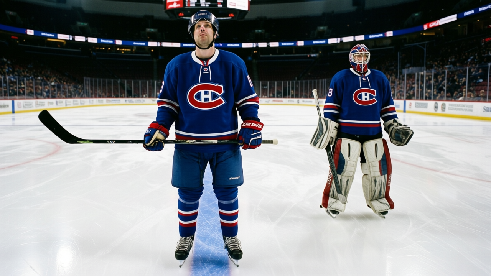
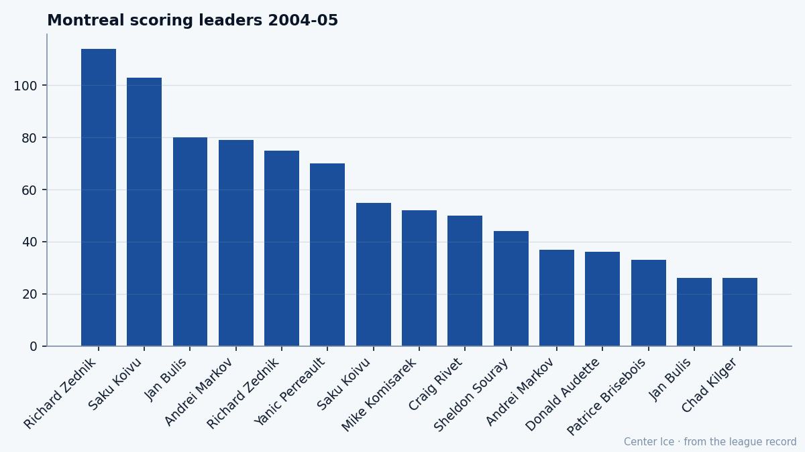
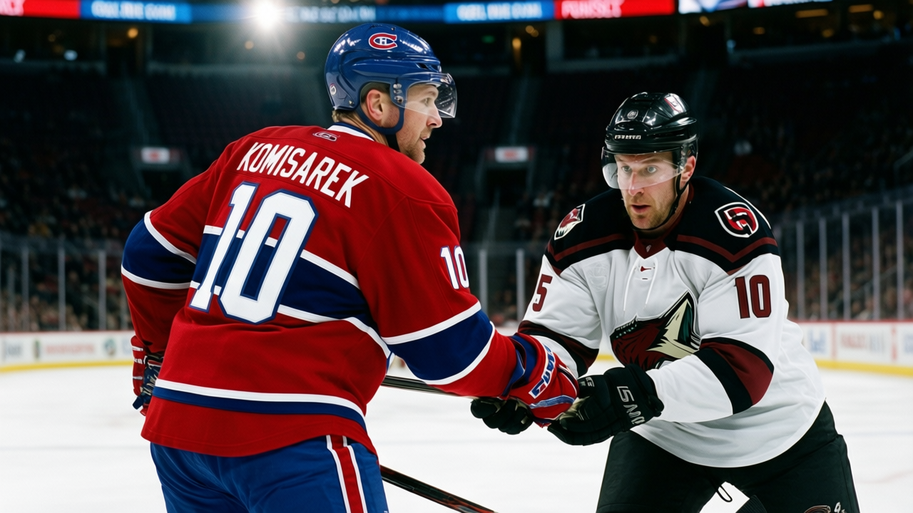

The Contract Year: Mike Komisarek plays for July at 22, on a team that has won 12
From 3 points in 24 games to 52 in 43, from 11.8 minutes to 29.9. The Development Index has him up 6. His $1.10M expires with the season.
 Tomáš VránaProfile writer · The Sweater
Tomáš VránaProfile writer · The SweaterMike Komisarek80 logged 11.8 minutes a night last season and finished with 3 points in 24 games. This year he has 52 points in 43 games at 29.9 minutes a night. The Bureau's Development Index has him up 6, the highest reading among Montreal's blueliners. He is 22 years old. His contract pays him $1.10M and expires in July.
The  Montreal Canadiens Canadiens have won 12 games. They sit last in the Northeast at 12-23-4, outscored 178 to 145 across 42 games. Komisarek is plus-14 on that team.
Montreal Canadiens Canadiens have won 12 games. They sit last in the Northeast at 12-23-4, outscored 178 to 145 across 42 games. Komisarek is plus-14 on that team.
From West Islip to the top pairing
Komisarek grew up in West Islip, New York, on the south shore of Long Island. He played youth hockey in the Suffolk PAL organization, then two years of varsity hockey at St. Anthony's High School, then one season with the New England Jr. Coyotes in the Eastern Junior Hockey League under Gary Dineen. From there he went to USA Hockey's National Team Development Program, where he studied under the Lithuanian coach Aleksey Nikiforov.
He spent two seasons at the University of Michigan: 46 points and 145 penalty minutes in 80 games, a CCHA title, two NCAA tournament appearances, and a First Team Division I All-American nod in 2002. The Canadiens took him 7th overall in the 2001 draft. He signed on July 24, 2002, and played his first NHL game in 2002-03.
The 2003-04 line reads 24 games, 1 goal, 2 assists, 11.8 minutes. A depth call-up getting sheltered minutes on a team that needed someone. Then the summer, and whatever changed, and this season.
What the Book says
The Bureau's Book has Komisarek at 78 today, a base of 77 with the Index adding a point above. His potential reads 92. The grades that make him a problem for other teams: a checking rating of 88, speed at 85, aggression at 84, puck handling at 84, shot power at 83, passing at 81. The grades that keep him from the first line of the top 20: a fighting grade of 51, a breakout pass grade of 52, an offensive awareness grade of 55.
A 75-inch, 225-pound right-shot defenseman with 88 checking and 85 speed is the kind of body a coach builds around. The 81 passing and 84 puck handling mean he does more than block shots. His 45 assists this season tell you where the puck goes when he gets it.
The 112 penalty minutes are the other half of his game. He is the most penalized defenseman on the team, by a wide margin. Aggression at 84 is a two-way grade in a league that punishes it with two minutes.

Where he sits on the blue line
Among defensemen this season, Komisarek's 52 points put him 4th in the league. The three men ahead of him are 34, 34, and 31. Komisarek is 22. Last season, the top-scoring defenseman in the league was  Chris Pronger86 with 82 points.
Chris Pronger86 with 82 points.  Eric Desjardins80 had 81. The scale of what is possible at the position, over a full 82-game season, runs through the low 80s. A 99-point pace at 22 is not on that scale yet, but it is the right direction.
Eric Desjardins80 had 81. The scale of what is possible at the position, over a full 82-game season, runs through the low 80s. A 99-point pace at 22 is not on that scale yet, but it is the right direction.
His 29.9 minutes a night puts him 5th in total ice time among blueliners, which says the coaching staff trusts him in every situation the game offers. On a team that cannot protect a lead, that means he is on the ice when the other team is throwing numbers at him. His plus-14 is the number that says he is holding up.
The 85 shots he has taken this season are modest for a defenseman who carries the puck that often. The shot power of 83 says he has the weapon; the 7 goals say he has not yet decided to use it on every chance. The 45 assists tell you he prefers the pass, which makes sense with a passing grade of 81 and a shot power of 83 sitting close together. The 20 goals that would make him a Norris candidate probably live somewhere in his next three seasons, if the development holds.

What the room says
Komisarek's morale sits at 94 in the Bureau's scale, the highest reading on the Montreal roster. The room around him is a thin one:  Jose Theodore89 at 87 in goal,
Jose Theodore89 at 87 in goal,  Saku Koivu85 at 83 down the middle,
Saku Koivu85 at 83 down the middle,  Richard Zednik83 at 81 on the wing, and then
Richard Zednik83 at 81 on the wing, and then  Andrei Markov79 at 77 on the other side of his pairing. After that, the drop-off is steep.
Andrei Markov79 at 77 on the other side of his pairing. After that, the drop-off is steep.
A 22-year-old carrying a 99-point pace while his team gives up 4.21 goals a game is a man doing a job nobody else on the roster is doing. He played 1284 minutes this season. No defenseman at Montreal has played more. The room watches him carry the puck out of his own end at 84 puck handling and 85 speed while the team's goal differential sits at minus 33.
A teammate who has shared the blue line with him this winter would put it differently: you look over at the point in the third period, down one, and he is already circling to your side of the ice because he wants the puck when it matters. He is 225 pounds and 75 inches tall and he skates like a winger, so when the other team collapses on Koivu in the slot, the only man who can carry it five feet and still make a play from a bad angle is the one wearing number 10.
The July problem
One year left at $1.10M. The Development Index has him up 6. The potential says 92. If he keeps this pace, 39 games remain and he finishes at 99 points for the season, which is the kind of number that makes a 22-year-old on a one-year deal into a negotiation that starts the moment the season ends.
The Bureau's top-scoring defensemen from last season give the scale. Pronger had 82 points in 82 games. Desjardins had 81 in 82. If Komisarek finishes at 99 on a team that has won 12 games, the contract conversation will not be about whether he deserves a raise. It will be about how far past $3.00M a man gets when his base grade is 77 and his form is 6 above it and the room he plays in cannot stop giving up 4.21 goals a game.
He played varsity hockey at St. Anthony's and one season for the Jr. Coyotes in New England and two years at Michigan with a First Team All-American on his resume. He was the 7th player taken in 2001 and he spent two more winters in Montreal at 11.8 minutes a night before this one. He is 22, with 52 points and a deal that expires in July.